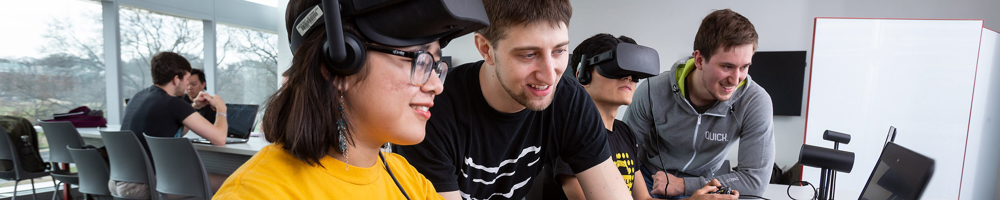
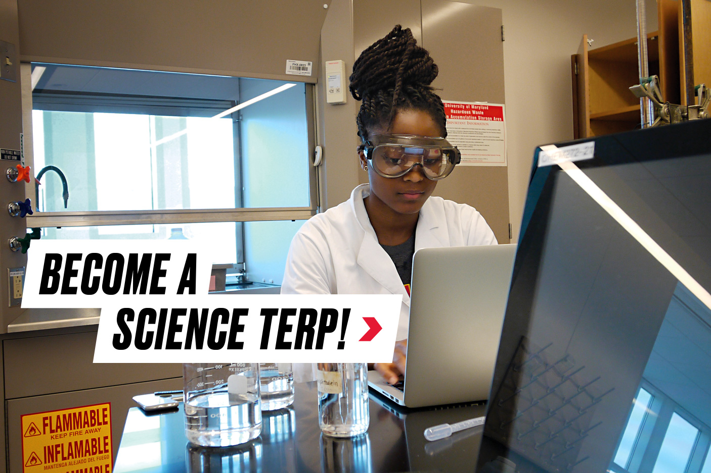
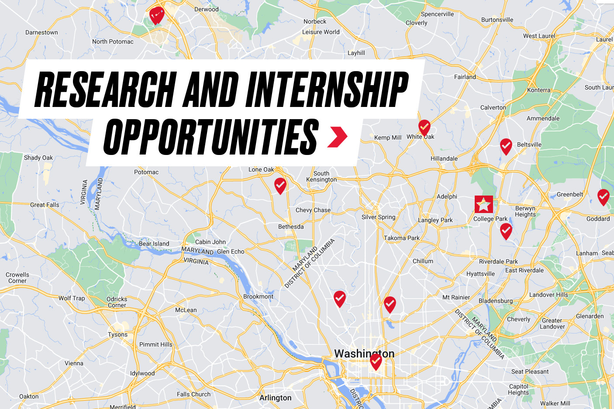
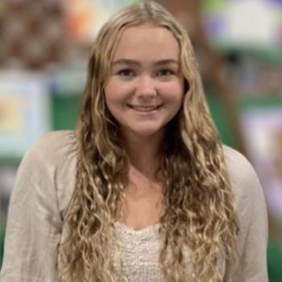
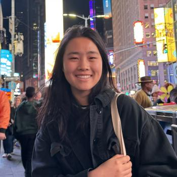
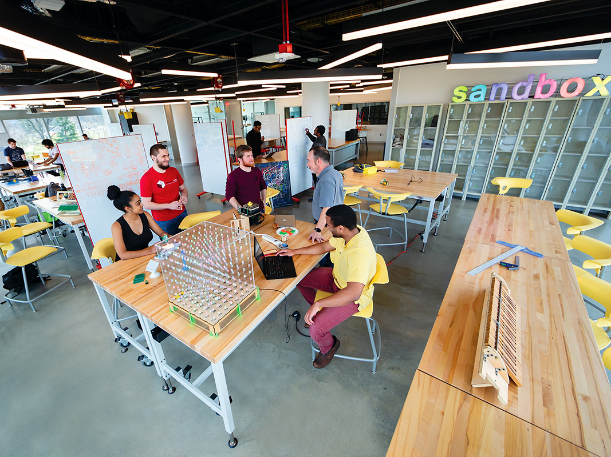
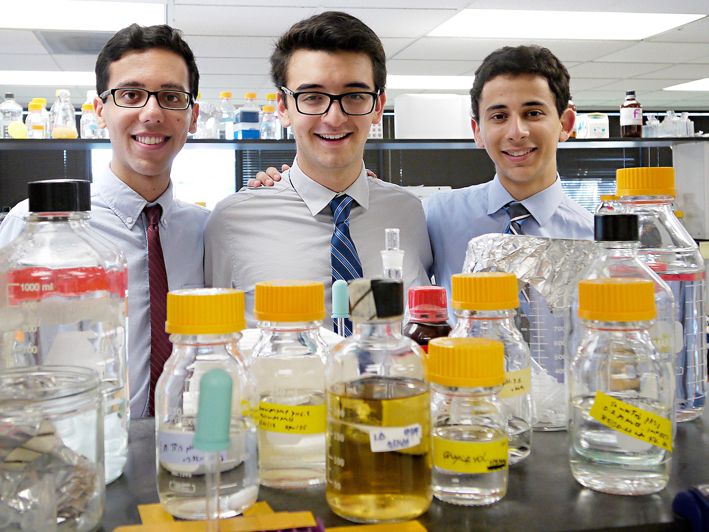
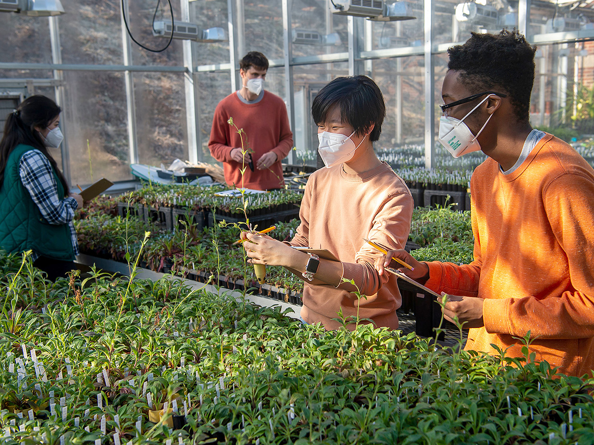
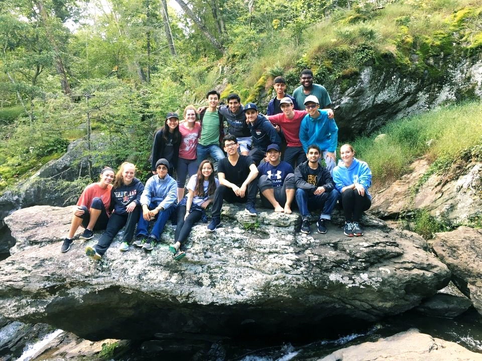

We provide our undergraduates with a rigorous, high-quality education and exceptional research opportunities in a challenging, supportive environment.


New Students
States
Countries
First-Generation College Students
From Groups Underrepresented in the Sciences
Participating in Living & Learning and Special Programs
Want to get in touch with a recruitment ambassador? Email egarosi@umd.edu
Biological Sciences and Psychology Dual Degree
Boyds, MD
Integrated Life Sciences (ILS)

Physics and Astronomy Double Major
Annapolis, MD
University Honors Program

Computer Science Major
Mathematics Minor
Saratoga, CA
College Park Scholars
Computer Science Major
Statistics Minor
Ellicott City, MD
College Park Scholars
Biological Sciences Major
Humanities, Health, and Medicine (HHM) and Disabilities Studies minors
Clarksburg, MD
Integrated Life Sciences (ILS)
Biological Sciences
Cell Biology & Genetics track
Data Science Minor
Computer Science and Biological Sciences double major
Ellicott City, MD
Integrated Life Sciences Honors College
Dual Degree in Biochemistry and Biological Sciences
General Business Minor
Rockville, MD
Integrated Life Sciences (ILS)
Graduating early
Future Students
Current Students



